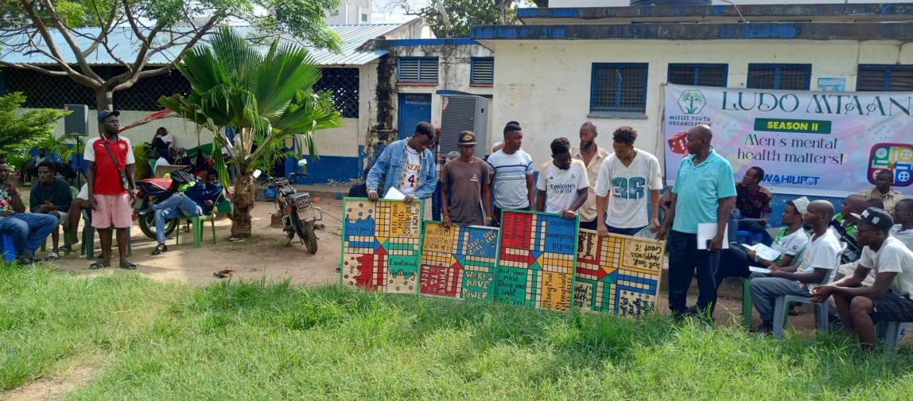
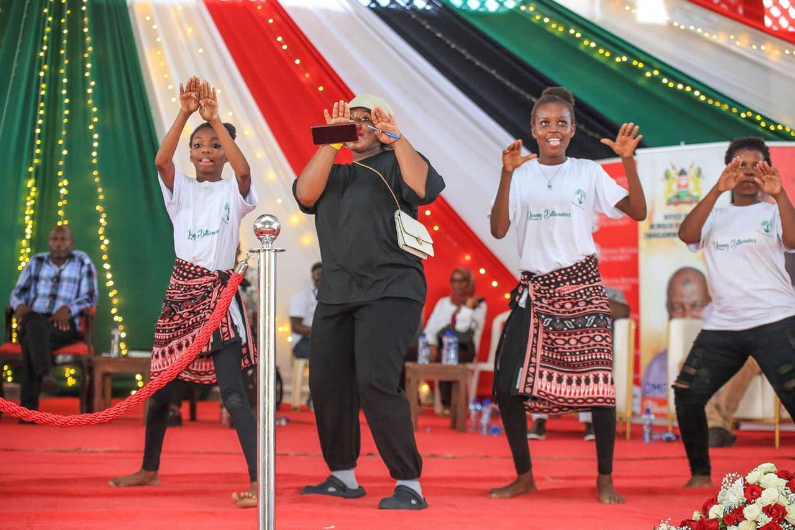
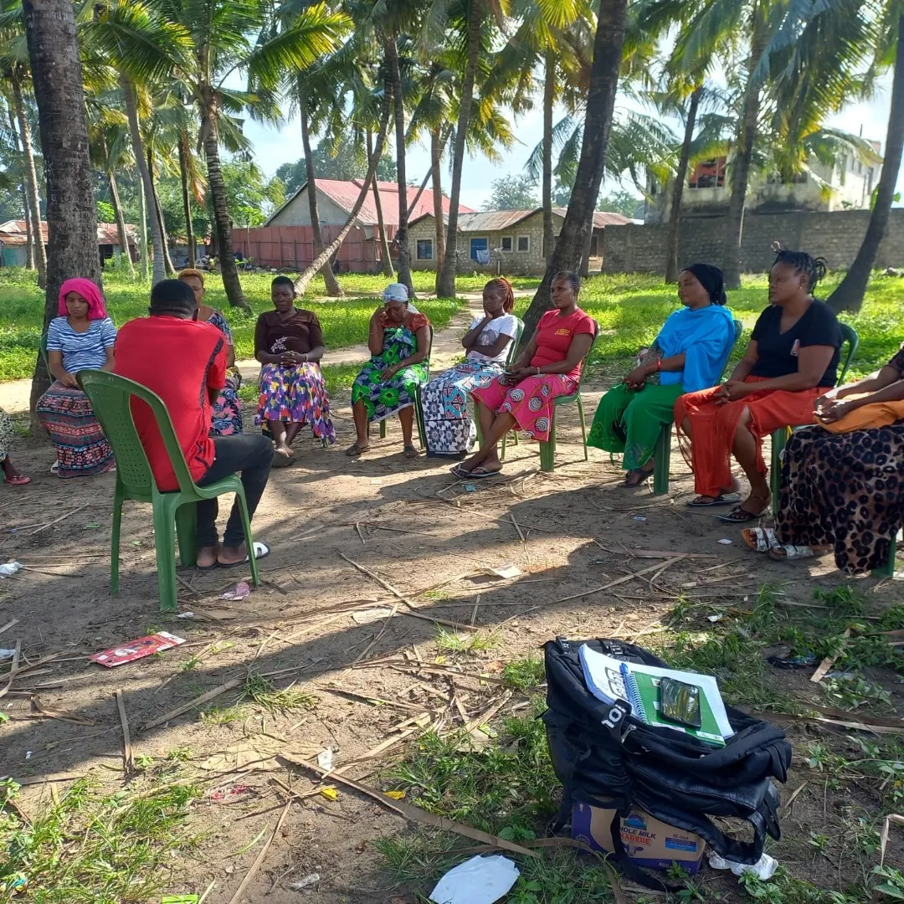
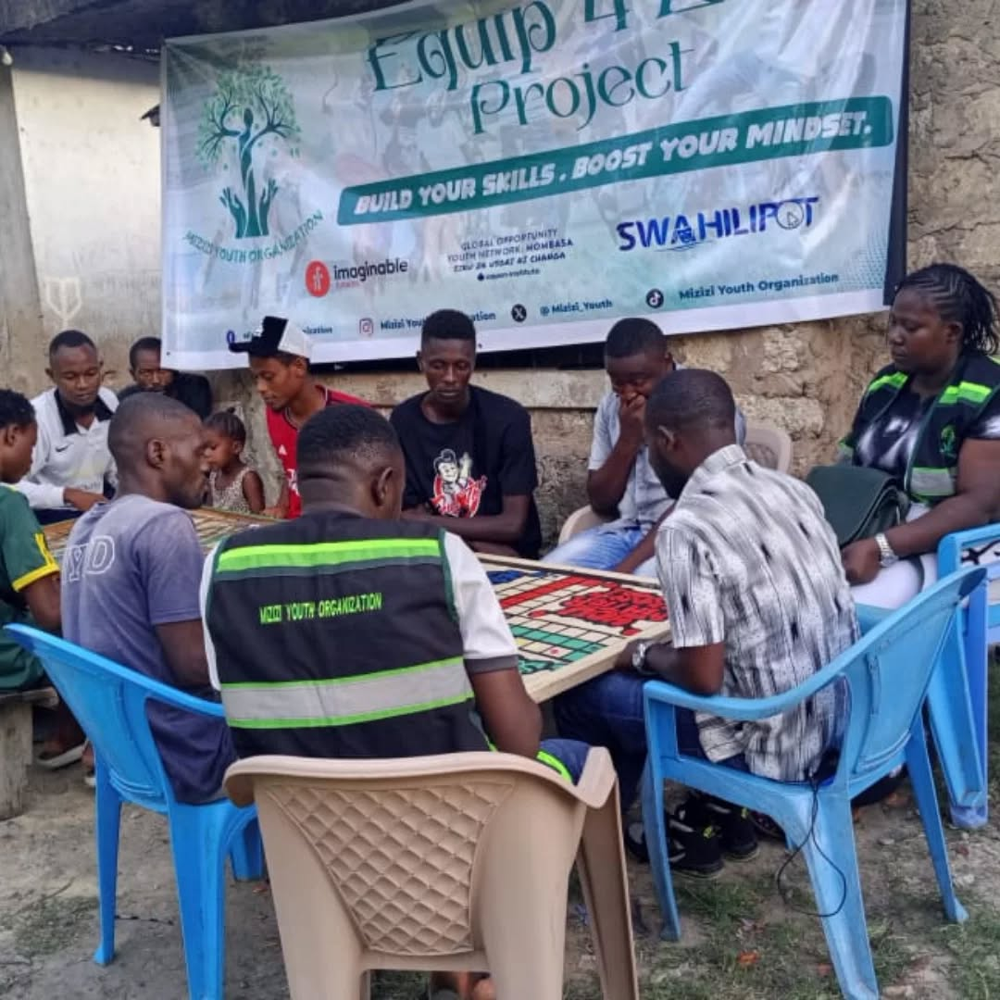
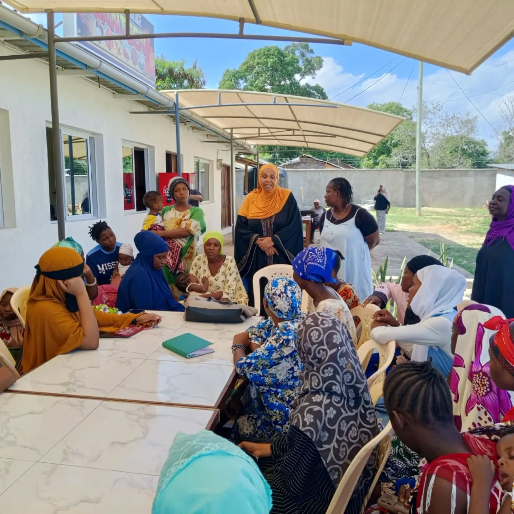
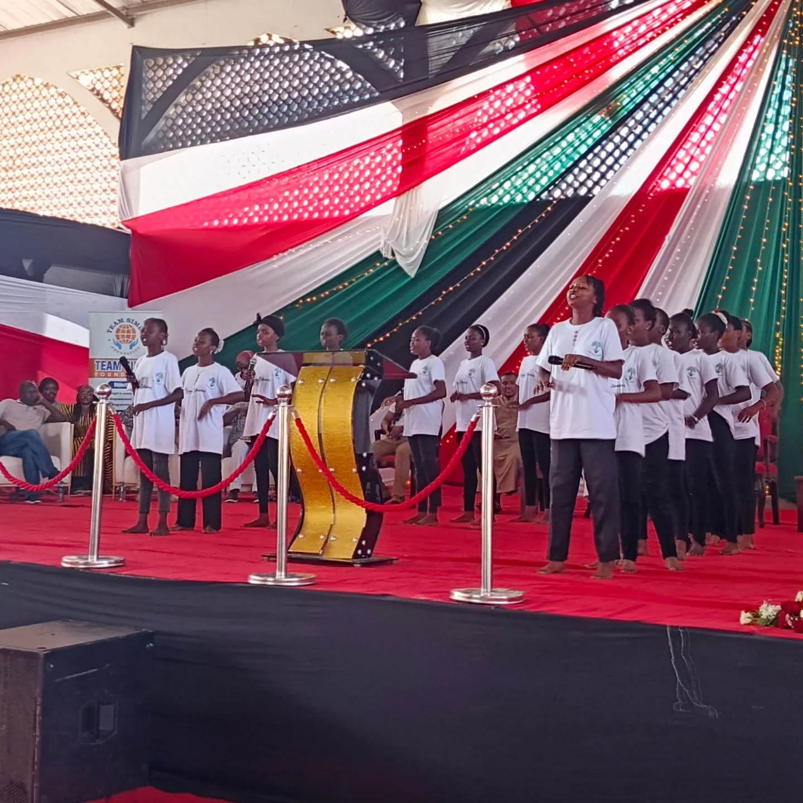
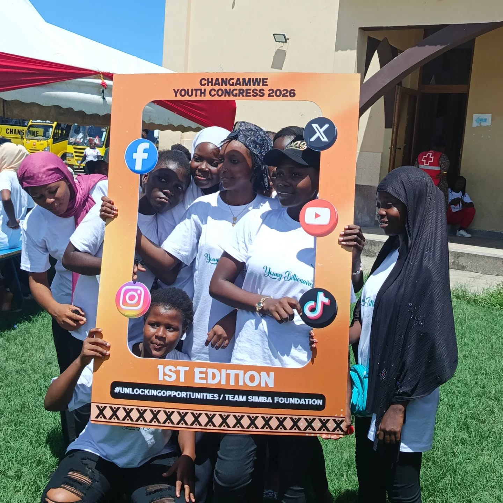

Prevention
Early awareness, stigma reduction, coping tools, and help-seeking support.
Mental Health • Social Wellbeing • Youth Empowerment • Mombasa
Supporting prevention, promotion, rehabilitation, youth leadership, skills development, and community-driven solutions across Mombasa.
About Mizizi
Mizizi Youth Organization is a Mombasa-based community organization founded in 2020 to respond to mental health stigma, limited support systems, and gaps in accessible services affecting young people and families.
MYO now works across mental health and social wellbeing, health and gender inclusivity, livelihoods, environmental action, and human rights and governance.
Read our story →Impact Snapshot
Our work connects awareness, safe spaces, psychosocial support, referrals, skills development, and long-term resilience.
People reached through mental health literacy and awareness
Families supported through Group PM+
Individuals supported through IPT-G sessions
People reached through SRHR interventions
Youth supported through empowerment programs
Men reached through the Ludo Mental Health Initiative
Girls supported through YSLAs
Young Billionaires Club members mentored
Our Model
Early awareness, stigma reduction, coping tools, and help-seeking support.
Community dialogues, youth-friendly safe spaces, and peer support networks.
Referral pathways, counseling linkages, psychosocial support, and reintegration.
Skills development, YSLAs, talent growth, livelihoods, and civic participation.
Programs

Mental health literacy, Ustawi Minds, Ludo, Group PM+, IPT-G, rehabilitation, and referrals.

SRHR education, menstrual hygiene, digital referrals, HIV prevention, and GBV support linkages.

Mentorship, career guidance, skills development, Young Billionaires Club, and YSLAs.
Gallery
A glimpse into Mizizi’s support groups, Ludo sessions, youth leadership, talent development, and empowerment work.






Partners
MYO collaborates with community, health, youth, education, and development partners to expand mental health, SRHR, livelihoods, environmental action, and governance programs.
 Swahilipot Hub
Swahilipot Hub TIKO / Triggerise Africa
TIKO / Triggerise Africa Aga Khan University
Aga Khan University Ministry of Health Kenya
Ministry of Health Kenya Equity Bank
Equity Bank Mombasa Women Empowerment Network
Mombasa Women Empowerment Network Mombasa Young Mothers
Mombasa Young Mothers Pwani Youth Network
Pwani Youth Network SHOFCO
SHOFCO Youth Alive Kenya
Youth Alive Kenya Thrive Together CBO
Thrive Together CBO Strong Minds AfricaSwahilipot HubTIKO / Triggerise AfricaAga Khan UniversityMinistry of Health KenyaEquity BankMombasa Women Empowerment NetworkMombasa Young MothersPwani Youth NetworkSHOFCOYouth Alive KenyaThrive Together CBOStrong Minds Africa
Strong Minds AfricaSwahilipot HubTIKO / Triggerise AfricaAga Khan UniversityMinistry of Health KenyaEquity BankMombasa Women Empowerment NetworkMombasa Young MothersPwani Youth NetworkSHOFCOYouth Alive KenyaThrive Together CBOStrong Minds AfricaCall to Action
Partner with Mizizi to expand mental health literacy, psychosocial support, rehabilitation pathways, youth empowerment, and climate-conscious community action.